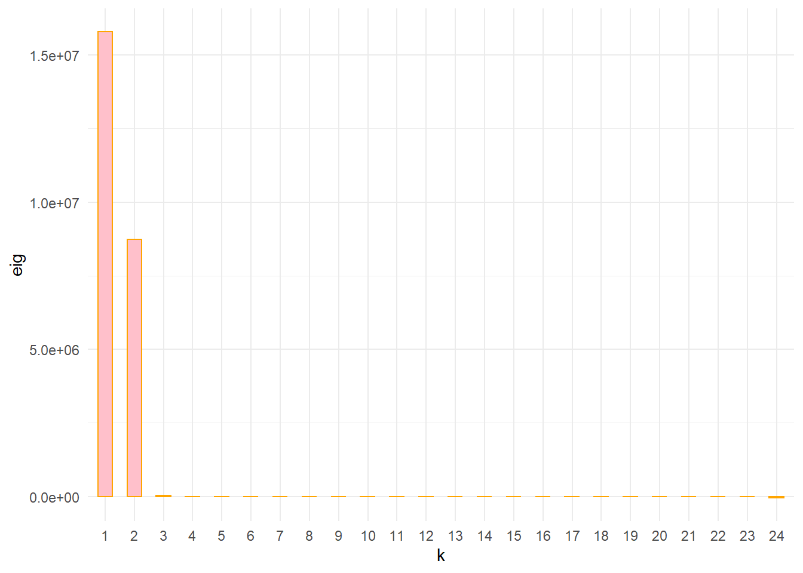
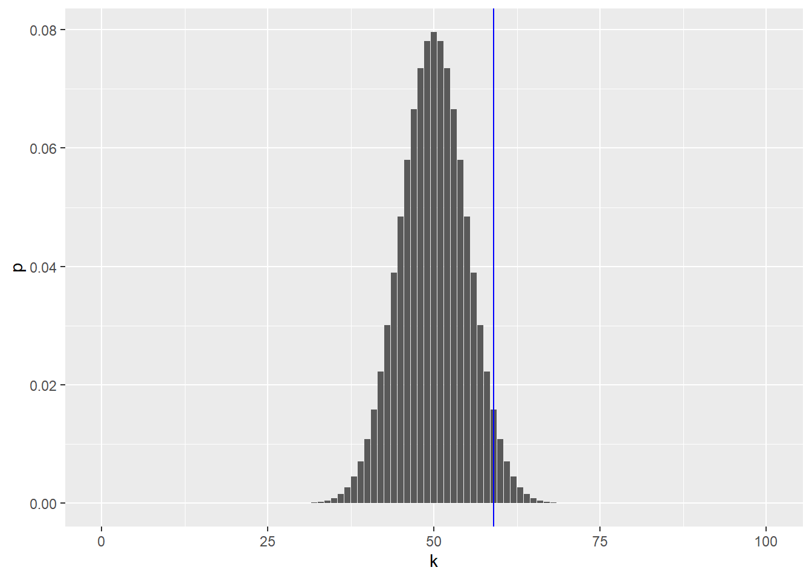
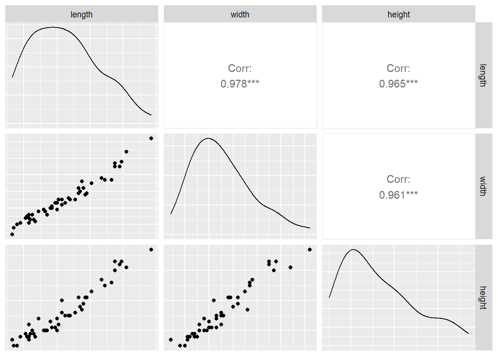
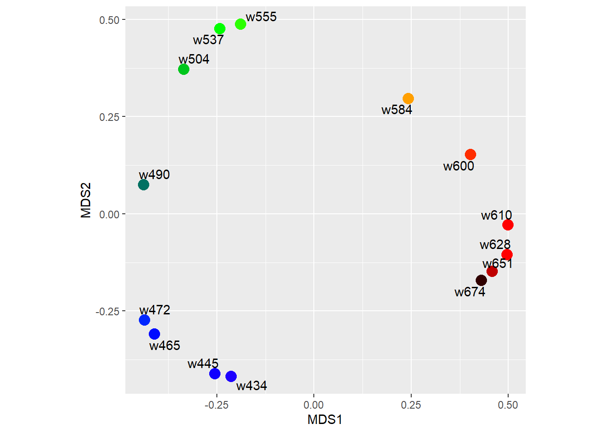
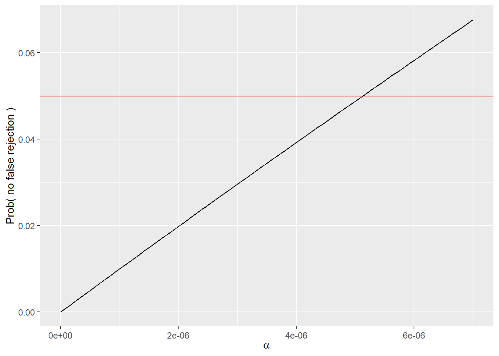
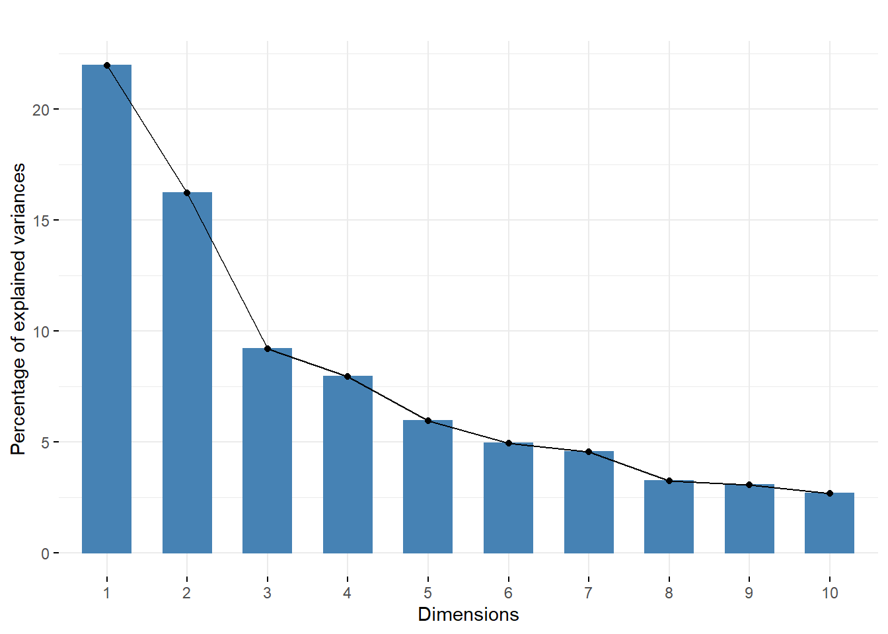
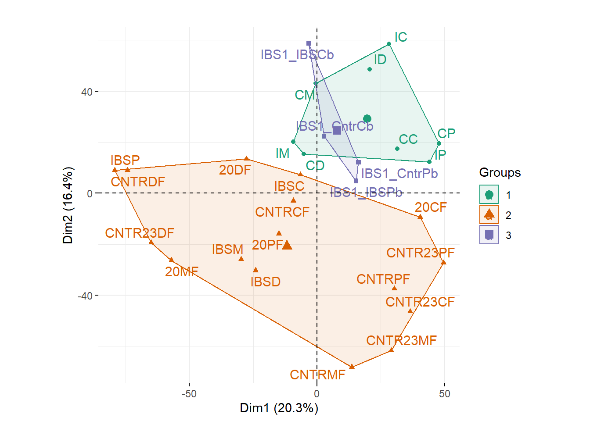
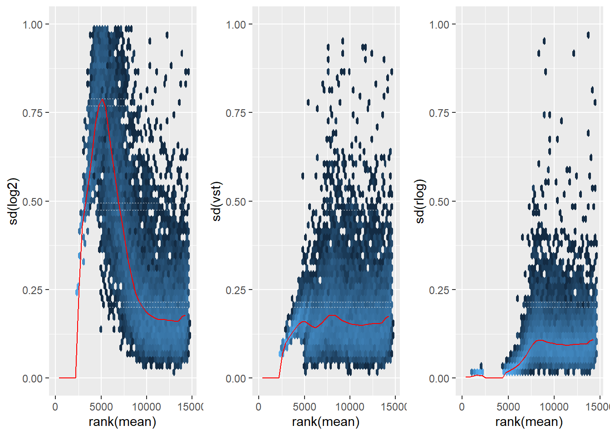
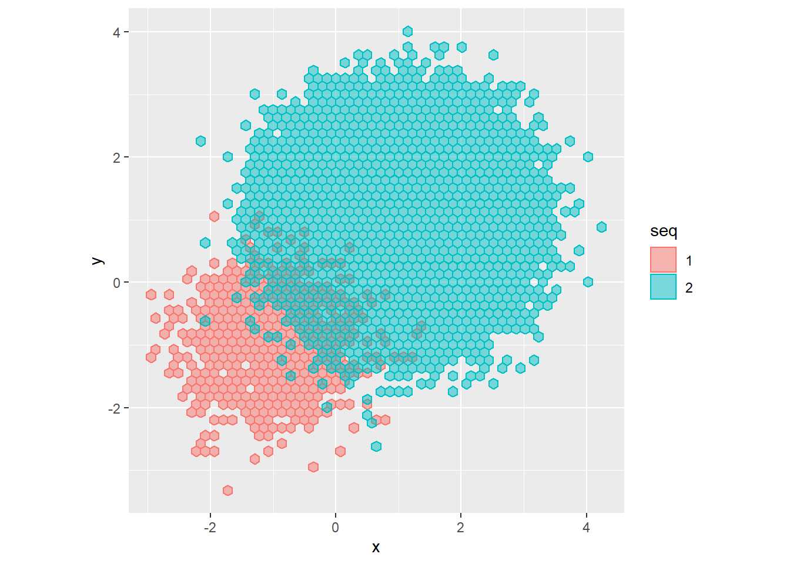

Chapter 4 CAPÍTULO N° 4 - Modelos de mezcla
4.1 Objetivos de este capítulo
Genere sus propios datos de modelo mixto a partir de distribuciones compuestas por dos poblaciones normales.
Vea cómo el algoritmo Expectation-Maximization (EM) nos permite aplicar “ingeniería inversa” a las mezclas subyacentes en el conjunto de datos.
Use un tipo especial de combinación llamada inflación cero para datos como los datos ChIP-Seq que tienen muchos ceros adicionales.
Descubra la distribución acumulativa empírica: una mezcla especial que podemos construir a partir de los datos observados. Esto nos permitirá ver cómo podemos simular la variabilidad de nuestras estimaciones usando el bootstrap.
Construya la distribución de Laplace como una instancia de un modelo de mezcla infinita, con muchos componentes. Lo usaremos para modelar las longitudes de los promotores y las intensidades de los microarreglos.
Tenga nuestro primer encuentro con la distribución gamma-Poisson, un modelo jerárquico útil para los datos de RNA-Seq. Veremos que surge de forma natural al mezclar diferentes fuentes distribuidas de Poisson.
Vea cómo los modelos mixtos nos permiten elegir transformaciones de datos.
Paquetes
#paquetes
library(pacman)
p_load("ggplot2","dplyr")4.2 Mezclas finitas
4.2.1 Ejemplos sencillos y experimentos informáticos
Tira una moneda justa.
Genere un número aleatorio a partir de una distribución normal con media 1 y varianza 0,25.
coinflips = (runif(10000) > 0.5)
table(coinflips)## coinflips
## FALSE TRUE
## 4962 5038oneFlip = function(fl, mean1 = 1, mean2 = 3, sd1 = 0.5, sd2 = 0.5) {
if (fl) {
rnorm(1, mean1, sd1)
} else {
rnorm(1, mean2, sd2)
}
}
fairmix = vapply(coinflips, oneFlip, numeric(1))
ggplot(tibble(value = fairmix), aes(x = value)) +
geom_histogram(fill = "purple", binwidth = 0.1)
means = c(1, 3)
sds = c(0.5, 0.5)
values = rnorm(length(coinflips),
mean = ifelse(coinflips, means[1], means[2]),
sd = ifelse(coinflips, sds[1], sds[2]))fair = tibble(
coinflips = (runif(1e6) > 0.5),
values = rnorm(length(coinflips),
mean = ifelse(coinflips, means[1], means[2]),
sd = ifelse(coinflips, sds[1], sds[2])))
ggplot(fair, aes(x = values)) +
geom_histogram(fill = "purple", bins = 500)
ggplot(dplyr::filter(fair, coinflips), aes(x = values)) +
geom_histogram(aes(y = ..density..), fill = "purple",
binwidth = 0.01) +
stat_function(fun = dnorm,
args = list(mean = means[1], sd = sds[1]), color = "red")
Se puede escribir la fórmula matemática para la densidad de todos fair$values(la curva límite a la que tienden a parecerse los histogramas) como una suma de las dos densidades.
fairtheory = tibble(
x = seq(-1, 5, length.out = 1000),
f = 0.5 * dnorm(x, mean = means[1], sd = sds[1]) +
0.5 * dnorm(x, mean = means[2], sd = sds[2]))
ggplot(fairtheory, aes(x = x, y = f)) +
geom_line(color = "red", size = 1.5) + ylab("mixture density")
mystery = tibble(
coinflips = (runif(1e3) > 0.5),
values = rnorm(length(coinflips),
mean = ifelse(coinflips, 1, 2),
sd = ifelse(coinflips, sqrt(.5), sqrt(.5))))
br2 = with(mystery, seq(min(values), max(values), length.out = 30))
ggplot(mystery, aes(x = values)) +
geom_histogram(fill = "purple", breaks = br2)
Las barras de las distribuciones de dos componentes se trazan una encima de la otra. Una forma diferente de mostrar los componentes es la producida por el siguiente código.
head(mystery, 3)## # A tibble: 3 x 2
## coinflips values
## <lgl> <dbl>
## 1 FALSE 2.08
## 2 FALSE 2.58
## 3 FALSE 1.87br = with(mystery, seq(min(values), max(values), length.out = 30))
ggplot(mystery, aes(x = values)) +
geom_histogram(data = dplyr::filter(mystery, coinflips),
fill = "red", alpha = 0.2, breaks = br) +
geom_histogram(data = dplyr::filter(mystery, !coinflips),
fill = "darkblue", alpha = 0.2, breaks = br) 
ggplot(mystery, aes(x = values, fill = coinflips)) +
geom_histogram(data = dplyr::filter(mystery, coinflips),
fill = "red", alpha = 0.2, breaks = br) +
geom_histogram(data = dplyr::filter(mystery, !coinflips),
fill = "darkblue", alpha = 0.2, breaks = br) +
geom_histogram(fill = "purple", breaks = br, alpha = 0.2)
4.2.2 Descubriendo las etiquetas de clase ocultas
Pregunta
Supongamos que tenemos dos monedas injustas, cuyas probabilidades de cara son p1 = 0.125 y p2= 0,25 . Con probabilidad π elegimos la moneda 1, con probabilidad 1 − π , moneda 2. Luego lanzamos esa moneda dos veces y registramos el número de caras K.
Suponiendo que se tiene una mezcla de dos normales con parámetros medios desconocidos y desviaciones estándar 1 ; por lo tanto, ($ μ1 = ? , μ2 = ? , σ 1 = σ 2 = 1 $) . Aquí hay un ejemplo de datos generados de acuerdo con dicho modelo. las etiquetas eres tu .
mus = c(-0.5, 1.5)
lambda = 0.5
u = sample(2, size = 100, replace = TRUE, prob = c(lambda, 1-lambda))
x = rnorm(length(u), mean = mus[u])
dux = tibble(u, x)
head(dux)## # A tibble: 6 x 2
## u x
## <int> <dbl>
## 1 2 1.17
## 2 2 2.22
## 3 1 -0.775
## 4 1 -0.464
## 5 1 -0.0807
## 6 1 0.893Se puede estimar las medias usando MLE (Error cuadratico medio, Mean squared error) separados para cada grupoLa maximización se puede dividir en dos partes independientes y resolver como si se tuviera dos MLE diferentes para encontrar:
group_by(dux, u) |> summarize(mu = mean(x), sigma = sd(x))## # A tibble: 2 x 3
## u mu sigma
## <int> <dbl> <dbl>
## 1 1 -0.583 1.01
## 2 2 1.40 0.932table(dux$u) / nrow(dux)##
## 1 2
## 0.59 0.414.2.3 Modelos para datos inflados a cero
p_load("mosaics","mosaicsExample")
datafiles = c("../data/wgEncodeSydhTfbsGm12878Stat1StdAlnRep1_chr22_sorted.bam_fragL200_bin200.txt",
"../data/wgEncodeSydhTfbsGm12878InputStdAlnRep1_chr22_sorted.bam_fragL200_bin200.txt")
binTFBS = readBins(type = c("chip", "input"), fileName = datafiles)## Info: reading and preprocessing bin-level data...## Info: data contains only one chromosome.## Info: done!binTFBS## Summary: bin-level data (class: BinData)
## ----------------------------------------
## - # of chromosomes in the data: 1
## - total effective tag counts: 462479
## (sum of ChIP tag counts of all bins)
## - control sample is incorporated
## - mappability score is NOT incorporated
## - GC content score is NOT incorporated
## - uni-reads are assumed
## ----------------------------------------El número de sitios de unión encontrados en ventanas de 200 nt a lo largo del cromosoma 22 en un conjunto de datos de ChIP-Seq.
bincts = print(binTFBS)
ggplot(bincts, aes(x = tagCount)) +
geom_histogram(binwidth = 1, fill = "forestgreen")
ggplot(bincts, aes(x = tagCount)) + scale_y_log10() +
geom_histogram(binwidth = 1, fill = "forestgreen")## Warning: Transformation introduced infinite values in continuous y-axis## Warning: Removed 17 rows containing missing values (geom_bar).
4.2.4 Más de dos componentes
masses = c(A = 331, C = 307, G = 347, T = 322)
probs = c(A = 0.12, C = 0.38, G = 0.36, T = 0.14)
N = 7000
sd = 3
nuclt = sample(length(probs), N, replace = TRUE, prob = probs)
quadwts = rnorm(length(nuclt),
mean = masses[nuclt],
sd = sd)
ggplot(tibble(quadwts = quadwts), aes(x = quadwts)) +
geom_histogram(bins = 100, fill = "purple")
4.3 Distribuciones empíricas y bootstrap no paramétrico
library("HistData")## Warning: package 'HistData' was built under R version 4.1.3ZeaMays$diff## [1] 6.125 -8.375 1.000 2.000 0.750 2.875 3.500 5.125 1.750 3.625
## [11] 7.000 3.000 9.375 7.500 -6.000ggplot(ZeaMays, aes(x = diff, ymax = 1/15, ymin = 0)) +
geom_linerange(size = 1, col = "forestgreen") + ylim(0, 0.1)
Usando estas ideas, intentemos estimar la distribución muestral de la mediana de las diferencias de Zea Mays que vimos.
B = 1000
meds = replicate(B, {
i = sample(15, 15, replace = TRUE)
median(ZeaMays$diff[i])
})
ggplot(tibble(medians = meds), aes(x = medians)) +
geom_histogram(bins = 30, fill = "purple")
4.4 Mezclas infinitas
4.4.1 Mezcla infinita de normales
Nivel 2: La w s sirven como las varianzas de las variables normales con media μ generado usando rnorm.
w = rexp(10000, rate = 1)
mu = 0.3
lps = rnorm(length(w), mean = mu, sd = sqrt(w))
ggplot(data.frame(lps), aes(x = lps)) +
geom_histogram(fill = "purple", binwidth = 0.1)
4.4.1.1 Laplace asimétrica
mu = 0.3; sigma = 0.4; theta = -1
w = rexp(10000, 1)
alps = rnorm(length(w), theta + mu * w, sigma * sqrt(w))
ggplot(tibble(alps), aes(x = alps)) +
geom_histogram(fill = "purple", binwidth = 0.1)
Estas distribuciones de mezclas jerárquicas, donde cada instancia de los datos tiene su propia media y varianza, son modelos útiles en muchos entornos biológicos.
4.4.2 Mezclas infinitas de variables de Poisson
ggplot(tibble(x = rgamma(10000, shape = 2, rate = 1/3)),
aes(x = x)) + geom_histogram(bins = 100, fill= "purple")
ggplot(tibble(x = rgamma(10000, shape = 10, rate = 3/2)),
aes(x = x)) + geom_histogram(bins = 100, fill= "purple")Mezcla Gamma-Poisson: un modelo jerárquico
lambda = rgamma(10000, shape = 10, rate = 3/2)
gp = rpois(length(lambda), lambda = lambda)
ggplot(tibble(x = gp), aes(x = x)) +
geom_histogram(bins = 100, fill= "purple")
p_load_gh("vcd")
ofit = goodfit(gp, "nbinomial")
plot(ofit, xlab = "")
ofit$par## $size
## [1] 9.88837
##
## $prob
## [1] 0.5981977x = 0:95
mu = 50
vtot = 80
v1 = vtot - mu
scale = v1/mu # 0.6
shape = mu^2/v1 # 83.3
p1 = dgamma(x = x, scale = 0.6, shape = 80)
p2 = dpois(x = x, lambda = mu*1.2)
p3 = dnbinom(x = x, mu = mu, size = mu^2/vtot)p_load("RColorBrewer")
cols = brewer.pal(8, "Paired")
par(mfrow=c(3,1), mai=c(0.5, 0.5, 0.01, 0.01))
xlim = x[c(1, length(x))]
plot(NA, NA, xlim=xlim, ylim=c(0,0.07), type="n", ylab="", xlab="")
polygon(x, p1, col=cols[1])
abline(v=mu, col="black", lwd=3)
abline(v=mu*1.2, col=cols[2], lty=2, lwd=3)
plot(x, p2, col=cols[3], xlim=xlim, ylab="", xlab="", type="h", lwd=2)
abline(v=mu*1.2, col=cols[2], lwd=2)
abline(v=mu*1.1, col=cols[4], lty=2, lwd=3)
plot(x, p3, col=cols[4], xlim=xlim, type="h", lwd=2, ylab="", xlab="")
4.4.3 Transformaciones estabilizadoras de varianza
p_load("ggbeeswarm")
lambdas = seq(100, 900, by = 100)
simdat = lapply(lambdas, function(l)
tibble(y = rpois(n = 40, lambda=l), lambda = l)
) %>% bind_rows
par(mfrow=c(2,1))
ggplot(simdat, aes(x = lambda, y = y)) +
geom_beeswarm(alpha = 0.6, color = "purple")ggplot(simdat, aes(x = lambda, y = sqrt(y))) +
geom_beeswarm(alpha = 0.6, color = "purple")
Los datos que vemos en el panel izquierdo son un ejemplo de lo que se llama heteroscedasticidad : las desviaciones estándar (o, de manera equivalente, la varianza) de nuestros datos son diferentes en diferentes regiones de nuestro espacio de datos.
summarise(group_by(simdat, lambda), sd(y), sd(2*sqrt(y)))## # A tibble: 9 x 3
## lambda `sd(y)` `sd(2 * sqrt(y))`
## <dbl> <dbl> <dbl>
## 1 100 10.1 1.02
## 2 200 14.4 1.03
## 3 300 18.8 1.09
## 4 400 22.3 1.11
## 5 500 17.8 0.798
## 6 600 27.3 1.10
## 7 700 29.6 1.13
## 8 800 35.9 1.27
## 9 900 31.9 1.07muvalues = 2^seq(0, 10, by = 1)
simgp = lapply(muvalues, function(mu) {
u = rnbinom(n = 1e4, mu = mu, size = 4)
tibble(mean = mean(u), sd = sd(u),
lower = quantile(u, 0.025),
upper = quantile(u, 0.975),
mu = mu)
} ) %>% bind_rows
head(as.data.frame(simgp), 2)## mean sd lower upper mu
## 1 1.0104 1.114996 0 4 1
## 2 1.9908 1.747976 0 6 2ggplot(simgp, aes(x = mu, y = mean, ymin = lower, ymax = upper)) +
geom_point() + geom_errorbar()
Pregunta
¿Cómo podemos encontrar una transformación para estos datos que estabilice la varianza, similar a la función de raíz cuadrada para los datos distribuidos de Poisson?
simgp = mutate(simgp,
slopes = 1 / sd,
trsf = cumsum(slopes * mean))
ggplot(simgp, aes(x = mean, y = trsf)) +
geom_point() + geom_line() + xlab("")
4.5 Resumen de este capítulo
Se vio cómo el algoritmo EM ayuda a resolver un problema de optimización difícil al pretender iterativamente que conocemos una parte de la solución para calcular la otra parte, luego alternar para pretender que se conoce el otro componente y calcular la primera parte, y así sucesivamente. , hasta la convergencia.
Modelos de mezcla finita
Hemos visto cómo modelar mezclas de dos o más distribuciones normales con diferentes medias y varianzas. Hemos visto cómo descomponer una muestra dada de datos de tal mezcla, incluso sin conocer la variable latente, utilizando el algoritmo EM.
Modelos comunes de mezcla infinita
Los modelos de mezcla infinita son buenos para construir distribuciones nuevas (como la gamma-Poisson o Laplace) a partir de otras más básicas (como binomial, normal, Poisson). Los ejemplos comunes son
mezclas de normales (a menudo con un modelo jerárquico sobre las medias y las varianzas);
mezclas beta-binomiales – donde la probabilidad p en el binomio se genera según una beta ( a , b )
distribución;
gamma-Poisson para recuentos de lectura (consulte el Capítulo 8 );
gamma-exponencial para PCR.Aplicaciones
Los modelos de mezcla son útiles cuando hay varias capas de variabilidad experimental. Por ejemplo, en la capa más baja, nuestra precisión de medición puede estar limitada por límites físicos básicos de detección, y estos pueden modelarse mediante una distribución de Poisson en el caso de un ensayo basado en conteo, o una distribución normal en el caso de la medición continua.
Los modelos mixtos reflejan que a menudo hay cantidades heterogéneas de variabilidad (variaciones) en los datos. En tales casos, son necesarias transformaciones de datos adecuados, es decir, transformaciones de estabilización de varianza, antes de la visualización o el análisis posterior. Otra aplicación importante del modelado de mezclas es el modelo de dos componentes en pruebas múltiples.
El ECDF y el arranque
Vimos que al usar la muestra observada como una mezcla podíamos generar muchas muestras simuladas que nos informan sobre la distribución muestral de una estimación. Este método se llama bootstrap y volveremos a él varias veces, ya que proporciona una forma de evaluar las estimaciones incluso cuando no se dispone de fórmulas analíticas (decimos que no es paramétrico).
4.6 Ejercicios
f = function(x, a)
ifelse (a==0,
sqrt(x),
log(2*sqrt(a) * sqrt(x*(a*x+1)) + 2*a*x+1) / (2*sqrt(a)))
x = seq(0, 24, by = 0.1)
df = lapply(c(0, 0.05*2^(0:5)),
function(a) tibble(x = x, a = a, y = f(x, a))) %>% bind_rows()
ggplot(df, aes(x = x, y = y, col = factor(a))) + geom_line() +
theme(legend.position = "bottom") + labs(col = expression(alpha))
4.6.1 Ejercicio 4.1
El algoritmo EM paso a paso. Como conjunto de datos de ejemplo, usamos los valores en el archivo Myst.rds. Como siempre, es una buena idea visualizar primero los datos. El histograma se muestra en la figura 4.27 . Vamos a modelar estos datos como una mezcla de dos distribuciones normales con medias desconocidas y desviaciones estándar. Llamaremos a los dos componentes A y B.
mx = readRDS("../data/Myst.rds")$yvar
str(mx)## num [1:1800] 0.3038 0.0596 -0.0204 0.1849 0.2842 ...ggplot(tibble(mx), aes(x = mx)) + geom_histogram(binwidth = 0.025)
wA = runif(length(mx))
wB = 1 - wAiter = 0
loglik = -Inf
delta = +Inf
tolerance = 1e-3
miniter = 50
maxiter = 1000while((delta > tolerance) && (iter <= maxiter) || (iter < miniter)) {
lambda = mean(wA)
muA = weighted.mean(mx, wA)
muB = weighted.mean(mx, wB)
sdA = sqrt(weighted.mean((mx - muA)^2, wA))
sdB = sqrt(weighted.mean((mx - muB)^2, wB))
pA = lambda * dnorm(mx, mean = muA, sd = sdA)
pB = (1 - lambda) * dnorm(mx, mean = muB, sd = sdB)
ptot = pA + pB
wA = pA / ptot
wB = pB / ptot
loglikOld = loglik
loglik = sum(log(pA)) + sum(log(pB))
delta = abs(loglikOld - loglik)
iter = iter + 1
}
iter## [1] 352c(lambda, muA, muB, sdA, sdB)## [1] 0.4756306 -0.1693558 0.1473280 0.0982670 0.1497847Las primeras cinco líneas de la whilebucle implementar el paso . Estimamos los parámetros del modelo de mezcla utilizando los estimadores de máxima verosimilitud: la fracción de mezcla lambdapor medio de pA, y los parámetros de los dos componentes de la distribución normal ( muA, sdA) y ( muB, sdB) por las medias muestrales y las desviaciones estándar muestrales. Dado que no tenemos membresías de grupos binarios, pero las membresías probabilísticas pAy pB, usamos media ponderada (función weighted.mean) y desviación estándar para estas estimaciones.
Finalmente, comparemos nuestras estimaciones con las de la función
gm = mixtools::normalmixEM(mx, k = 2)## number of iterations= 247with(gm, c(lambda[1], mu, sigma))## [1] 0.47565297 -0.16935087 0.14733731 0.09826952 0.149779934.6.2 Ejercicio 4.2
Ejemplos de modelado de mezclas para regresión . El paquete flexmix (Grün, Scharl y Leisch 2012 ) nos permite agrupar y ajustar las regresiones a los datos al mismo tiempo. El paso M estándar FLXMRglmde flexmix es una interfaz para las instalaciones de modelado lineal generalizado de R (el glmfunción). Cargue el paquete y un conjunto de datos de ejemplo.
Primero, grafique los datos y trate de adivinar cómo se generaron los puntos.
Ajuste un modelo de mezcla de dos componentes usando los comandos.
p_load("flexmix")
data("NPreg")
m1 = flexmix(yn ~ x + I(x^2), data = NPreg, k = 2)- Observe los parámetros estimados de los componentes de la mezcla y elabore una tabla de verdad que clasifique de forma cruzada las clases verdaderas frente a las pertenencias a grupos. ¿Qué significa el resumen del objeto? m1¿muéstranos?
ggplot(NPreg, aes(x = x, y = yn)) + geom_point()
modeltools::parameters(m1, component = 1)## Comp.1
## coef.(Intercept) -0.20950974
## coef.x 4.81768229
## coef.I(x^2) 0.03616696
## sigma 3.47650123modeltools::parameters(m1, component = 2)## Comp.2
## coef.(Intercept) 14.7171959
## coef.x 9.8465846
## coef.I(x^2) -0.9683487
## sigma 3.4796332table(NPreg$class, modeltools::clusters(m1))##
## 1 2
## 1 95 5
## 2 5 95Para nuestros datos de ejemplo, las proporciones de ambos componentes son aproximadamente 0,7, lo que indica la superposición de las clases en la sección transversal de la línea y la parábola.
summary(m1)##
## Call:
## flexmix(formula = yn ~ x + I(x^2), data = NPreg, k = 2)
##
## prior size post>0 ratio
## Comp.1 0.494 100 145 0.690
## Comp.2 0.506 100 141 0.709
##
## 'log Lik.' -642.5453 (df=9)
## AIC: 1303.091 BIC: 1332.775El resumen muestra las probabilidades previas estimadas \({π}_{k}\) , el número de observaciones asignadas a los dos conglomerados, el número de observaciones donde \({p}_{nk} > δ\) (con un valor predeterminado de \(δ = {10}^{− 4}\) ), y la razón de los dos últimos números. Para componentes bien separados, una gran proporción de observaciones con posteriores que no desaparecen \({p}_{nk}\) deben ser asignados a su grupo, dando una proporción cercana a 1.
NPreg = mutate(NPreg, gr = factor(class))
ggplot(NPreg, aes(x = x, y = yn, group = gr)) +
geom_point(aes(colour = gr, shape = gr)) +
scale_colour_hue(l = 40, c = 180)